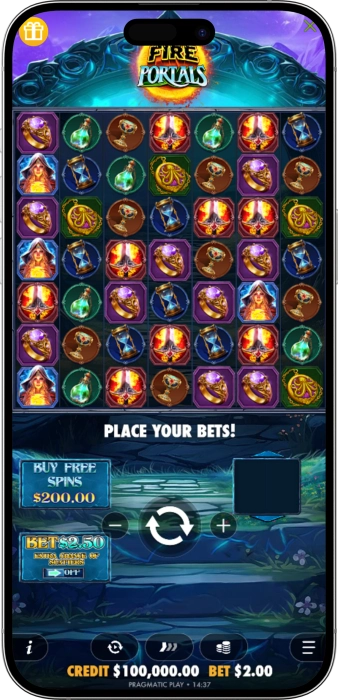
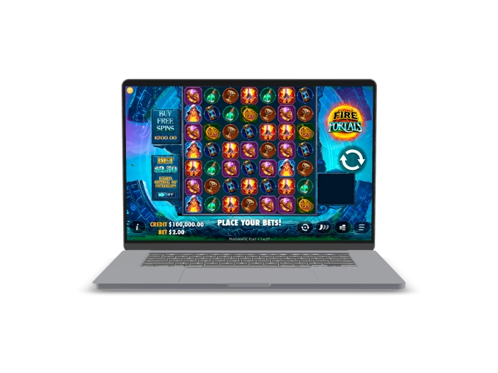

Exclusive welcome offer of
Exclusive welcome bonus of
Fire Portals Slot — Play Online & Win Big
Top Casinos
Bonus Details
Casino
Bonuses
Rate
Free Spins
More Info
Get
Advantages
- Looking for a thrilling high-volatility slot with massive win potential? Fire Portals by Pragmatic Play delivers a unique 7x7 cluster pays experience with certified 96.06% RTP, sticky wild multipliers, and a 10,000x max win cap. Here's what makes this slot stand out:
-
Pragmatic Play certified slot with 96.06% RTP & fair play guarantee
-
Unique 7x7 grid with cluster pays — 5+ symbols trigger wins
-
High volatility gameplay with 10,000x maximum win potential
-
Fire Portal Wilds with increasing multipliers on every tumble
-
Free Spins: 10–18 rounds with sticky wilds triggered by 3+ scatters
-
Ante Bet & Bonus Buy features for advanced players
- Fire Portals combines fantasy-themed excitement with mathematically certified gameplay. Its cascading tumble mechanic and wild multipliers keep every spin dynamic — join thousands of players spinning daily across top online casinos.
Fire Portals App



About Fire Portals Slot
Fire Portals is a high-volatility online slot by Pragmatic Play, built on a 7x7 grid with cluster pays mechanics. We offer players a fantasy-themed adventure with cascading tumbles, sticky wild multipliers, and a certified 96.06% RTP.
- Developed by Pragmatic Play, a leading iGaming provider
- 7x7 cluster pays grid — industry-unique slot format
- Certified RTP of 96.06% verified by independent auditors
- Released with Bonus Buy & Ante Bet for all player types
We operate with full Pragmatic Play certification and SSL 256-bit encryption on all platforms hosting Fire Portals. The game's RNG is tested and certified for fair random outcomes on every single spin, ensuring complete transparency.

We continue delivering exciting new features and exclusive tournaments around Fire Portals for online players. Responsible gaming tools including session limits and self-exclusion are available at all certified partner casinos. Play smart and enjoy!
Fire Portals Game Features & Mechanics
Complete Guide to Fire Portals Slot Features & Gameplay Mechanics
Fire Portals is one of the most distinctive cluster pays slots available at online casinos today, developed by Pragmatic Play — one of the most recognized iGaming software providers in the industry. The game unfolds across a 7x7 grid (49 symbols in total), a format that immediately sets it apart from traditional 5-reel slot machines. With a certified RTP of 96.06%, high volatility, and a maximum win potential of 10,000x your bet, Fire Portals is engineered for players who seek intense, high-reward gaming sessions. Whether you're a seasoned spinner or new to cluster pays mechanics, this guide gives you everything you need to understand and enjoy this fantasy-themed slot to the fullest.
What Is the 7x7 Cluster Pays Format?
Unlike conventional payline slots where wins are determined by symbol combinations across fixed lines, Fire Portals uses a cluster pays system on a 7x7 grid. A winning cluster is formed when 5 or more identical symbols connect horizontally or vertically. The larger the cluster, the greater the payout — which means every spin can potentially explode into a chain of cascading wins. This mechanic is increasingly popular among modern online slots and is part of what makes Fire Portals feel genuinely fresh compared to standard slot machines. When a winning cluster is identified, the symbols disappear and new ones tumble down from above, creating consecutive win opportunities from a single paid spin.
- Minimum Cluster Size: 5 connected symbols in horizontal or vertical direction to form a valid win.
- Grid Dimensions: 7 columns × 7 rows = 49 symbol positions active at all times.
- Tumble Feature: After each win, winning symbols are removed and new symbols fall from the top, potentially generating additional cluster wins from the same spin.
- Win Multiplier Accumulation: Each consecutive tumble within the same spin can activate or increase wild multipliers on the grid.
Fire Portal Wild — The Core Feature You Need to Know
The Fire Portal Wild is the engine that drives the biggest wins in this game. When a cluster win occurs adjacent to a Fire Portal symbol, that portal activates and places a Wild symbol with a multiplier on a random position within the grid. These wild multipliers start at x2 and increase with each subsequent tumble. Because multiple portals can activate simultaneously, it's entirely possible to see several wild multipliers stacking their values across the board — creating the conditions for extraordinary payouts that can reach the 10,000x maximum win cap. This is what separates Fire Portals from most other cluster pays slots currently in the market.
- Wild Multiplier Range: Starts at x2 and grows with each successive tumble within the same base game spin or free spins round.
- Multiple Wilds: Several Fire Portal Wilds can be active at the same time, and their multiplier values can combine to amplify wins dramatically.
- Sticky Wild in Free Spins: During the Free Spins bonus round, Fire Portal Wilds become sticky — they remain in place for all remaining free spins, keeping multipliers active throughout the entire bonus.
Free Spins Bonus Round: How to Trigger and What to Expect
The Free Spins feature is the most lucrative element of the Fire Portals bonus system. It is activated by landing 3 or more Scatter symbols anywhere on the 7x7 grid during the base game. Depending on how many Scatters land simultaneously, players receive between 10 and 18 free spins. The number of free spins awarded scales with the number of Scatters: 3 Scatters = 10 free spins, 4 Scatters = 14 free spins, and 5 or more Scatters = 18 free spins. During the bonus round, Fire Portal Wilds turn sticky, meaning any wild that lands stays fixed on the grid for the remainder of the free spins. The multiplier on each sticky wild also continues to grow with every tumble — this compounding effect is what creates the conditions for the slot's highest possible payouts.
RTP, Volatility, and Bet Range Breakdown
Fire Portals has been built with three available RTP configurations: 96.06% (default), 95.04%, and 94.08%. The highest setting of 96.06% is what players should aim for when selecting a casino to play on. The game's high volatility profile means wins are less frequent but significantly larger when they do occur — ideal for players with a sufficient bankroll who are chasing big outcomes rather than steady small returns. The base game hit frequency is approximately 25%, meaning roughly 1 in every 4 spins produces some kind of payout. The Free Spins bonus feature triggers on average once every 301 spins in the base game.
| Stat | Value | Note |
|---|---|---|
| RTP | 96.06% | Default (best) |
| Volatility | High | Big wins, less often |
| Max Win | 10,000x | Fixed cap |
| Min Bet | $0.20 | Per spin |
| Max Bet | $240 | Per spin |
| Grid | 7×7 | Cluster Pays |
| Hit Freq | ~25% | Base game |
| Free Spins | 10–18 | 3+ Scatters |
Symbols and Paytable: What Pays the Most?
Fire Portals features 7 distinct symbols — 4 high-paying and 3 low-paying — all styled around a mystical fantasy theme with magical artefacts and elemental imagery. The highest-paying symbol awards up to 150x your total bet when 15 or more appear in a cluster. Low-value symbols include the Potion, Hourglass, and Chalice. The Potion symbol can award up to 60x your bet for clusters of 15–49 symbols, while the Chalice offers up to 20x for the same cluster size. Understanding symbol values is key to appreciating how dramatically a single base game tumble sequence can evolve into a major win event.
- High-Pay Symbols (4 types): Fantasy-themed premium symbols paying up to 150x bet for clusters of 15+ connected symbols.
- Low-Pay Symbols (3 types): Potion (up to 60x), Hourglass, and Chalice (up to 20x) for large clusters of 15+ symbols.
- Wild Symbol: Placed by Fire Portal activation — substitutes for all regular symbols and carries a multiplier value.
- Scatter Symbol: 3 or more anywhere on the grid triggers the Free Spins bonus with 10–18 rounds depending on count.
Ante Bet and Bonus Buy Features
Pragmatic Play has equipped Fire Portals with two advanced player tools that enhance control over gameplay experience. The Ante Bet option increases your total stake by 25% in exchange for extra scatter symbols being added to the reels on each spin — effectively boosting your Free Spins trigger frequency. The RTP when using Ante Bet adjusts to approximately 96%. Separately, the Bonus Buy feature allows players to purchase direct access to the Free Spins round without waiting for organic scatter activation. The Bonus Buy RTP is set at approximately 95.95%, which is slightly lower than the base game default but still highly competitive. These features are ideal for experienced players who want to maximize their bonus exposure during a session.
Theme, Design, and Mobile Compatibility
Fire Portals delivers a captivating magic and fantasy visual theme — dark atmospheric backgrounds, glowing arcane portals, and richly animated symbols create an immersive gaming environment. The slot is fully optimized for mobile play across iOS and Android devices, adapting seamlessly to screens of all sizes from desktop 4K monitors down to compact smartphones. Pragmatic Play built Fire Portals using HTML5 technology, ensuring zero compromise in visual quality or feature functionality on mobile. The audio design complements the mystical theme with an atmospheric soundtrack that intensifies during winning sequences and bonus activations. For players who enjoy high-quality production values alongside powerful math mechanics, Fire Portals delivers on every front.
Software Providers
How to Play Fire Portals & Win Strategies
How to Play Fire Portals: Complete Strategy Guide for Online Players
Ready to step into the mystical world of Fire Portals? Whether you're playing on desktop or mobile at your preferred online casino, this comprehensive guide covers everything from placing your first bet to maximizing your winning potential during the Free Spins bonus round. Fire Portals by Pragmatic Play is a high-volatility cluster pays slot with a 7x7 grid, and while no slot strategy can guarantee wins, understanding the game's mechanics gives you a genuine edge in managing your bankroll and extracting the most value from each session. The combination of cascading tumbles, Fire Portal Wild multipliers, and sticky free spins creates one of the most dynamic slot experiences currently available online.
Step-by-Step: How to Start Playing Fire Portals
Getting started with Fire Portals at any online casino takes less than a minute. The interface is designed to be intuitive, though it differs slightly from traditional reel slots due to the cluster pays format. Here's the complete flow from loading the game to your first spin:
- Open Fire Portals at any licensed online casino or in free demo mode — no download required.
- Select your bet size using the stake controls: minimum $0.20, maximum $240 per spin.
- Optionally activate the Ante Bet (+25% stake) to increase scatter frequency and boost Free Spins chances.
- Press Spin — the 7x7 grid fills with symbols, and any cluster of 5+ matching symbols connected horizontally or vertically produces a win.
- Watch for Fire Portal activations — winning clusters adjacent to portals trigger Wild multiplier placements.
- Tumbles continue automatically until no new winning clusters form — each tumble can grow your wild multipliers further.
- If 3+ Scatters land during base game, the Free Spins bonus triggers with 10–18 rounds and sticky wild multipliers.
Bankroll Management for High Volatility Slots
Because Fire Portals is a high-volatility game, effective bankroll management is essential for any serious session. High volatility slots are mathematically designed to pay out less frequently but with higher individual win values — this means extended dry spells between significant payouts are entirely normal and expected. Professional slot players recommend having a session bankroll of at least 100x your chosen bet size when playing high-volatility games. For example, at the $0.20 minimum bet, a $20 session budget is a reasonable starting point. At higher stakes of $1 per spin, a $100 session fund provides adequate coverage for variance swings before the bonus round triggers.
- Recommended session budget: 100x your bet size minimum — e.g., $20 at $0.20 bets, $100 at $1 bets, $500 at $5 bets.
- Use demo mode first: All online casinos hosting Fire Portals offer a free demo — practice understanding the tumble mechanic before wagering real money.
- Set win and loss limits: Decide in advance at what point you'll stop — both a win target (e.g., 3x session budget) and a loss limit (e.g., full session budget).
- Ante Bet consideration: While Ante Bet boosts scatter frequency, it increases your cost per spin by 25% — only use it if your bankroll comfortably supports the higher burn rate.
- Bonus Buy caution: Purchasing the bonus directly costs a premium multiple of your stake — typically 80–100x — and should only be used by players comfortable with that risk level.
Which RTP Version Should You Play On?
Fire Portals comes in three RTP configurations: 96.06% (optimal), 95.04%, and 94.08%. The RTP version available depends entirely on the casino operator's settings — players have no direct control over which version the casino has deployed. However, you can check the active RTP by clicking the information button ('I') within the game interface and scrolling through the settings panel. Always prioritize casinos running Fire Portals at the maximum 96.06% RTP setting, as this provides the highest long-term return rate and best expected value for your gambling investment. Some licensed online casinos explicitly advertise their RTP settings as a competitive differentiator — look for this information before depositing.
Comparing Fire Portals to Similar Cluster Pays Slots
Fire Portals sits within a growing category of cluster pays slots that have challenged traditional payline formats in recent years. Understanding how it compares to similar titles helps players make informed choices about where to invest their casino sessions.
| Slot | RTP | Max Win |
|---|---|---|
| Fire Portals | 96.06% | 10,000x |
| Sweet Bonanza | 96.51% | 21,175x |
| Big Bass Bonanza | 96.71% | 2,100x |
| Gates of Olympus | 96.50% | 5,000x |
| Reactoonz | 96.51% | 4,570x |
Responsible Gaming: Playing Fire Portals Safely
We are committed to promoting responsible gambling practices for all players who enjoy Fire Portals or any other online slot. High-volatility games like Fire Portals can produce extended losing streaks as part of their normal mathematical behavior — this is not a malfunction but an inherent feature of high-variance game design. All licensed online casinos offering Fire Portals are required to provide responsible gaming tools including deposit limits, session time reminders, cooling-off periods, and self-exclusion programs. If you feel that gambling is negatively affecting your life, organizations including GamCare, BeGambleAware, and Gambling Therapy offer free, confidential support 24 hours a day. Always treat slot gaming as entertainment — set a budget before you play, never chase losses, and stop when you've reached your predetermined limit.
- Set deposit limits: All regulated casinos must allow you to cap daily, weekly, or monthly deposit amounts to protect your budget.
- Use reality checks: Enable session time reminders so you're aware of how long you've been playing.
- Play demo first: Fire Portals is available in free play mode at most casinos — use it to learn the game without financial risk.
- Self-exclusion: If needed, self-exclusion tools are available through your casino account and national gambling exclusion schemes like GAMSTOP (UK).
- Support resources: GamCare (gamcare.org.uk), BeGambleAware (begambleaware.org), and the National Problem Gambling Helpline (1-800-522-4700) provide free assistance.
Why Choose Fire Portals Over Other Online Slots?
Fire Portals earns its reputation as one of Pragmatic Play's standout cluster pays titles through a combination of factors that satisfy both casual players and high-stakes enthusiasts. The 10,000x maximum win cap is among the highest fixed win limits in the Pragmatic Play portfolio. The Fire Portal Wild multiplier system is genuinely unique — it creates a compounding win mechanic that feels different from standard wild symbols in conventional slots. The high-quality mobile optimization means performance is identical whether you're playing on a smartphone during a commute or on a widescreen desktop monitor. For players who enjoy the fantasy genre, the atmospheric design and thematic cohesion make every spin an immersive experience rather than a mechanical routine. Join us in discovering why Fire Portals consistently ranks among the top-rated cluster pays slots across major online casino platforms worldwide.
Frequently Asked Questions
The default RTP of Fire Portals is 96.06%, which is the optimal setting available. Some casinos may run the game at lower RTP versions of 95.04% or 94.08%. Check the in-game information panel by clicking the 'I' button to confirm which RTP your casino has configured.
Land 3 or more Scatter symbols anywhere on the 7x7 grid during the base game to trigger Free Spins. Three Scatters award 10 free spins, four award 14, and five or more award 18. During Free Spins, Fire Portal Wilds become sticky with growing multipliers for maximum win potential.
The maximum win in Fire Portals is 10,000x your bet — a fixed cap set by Pragmatic Play. At the maximum bet of $240 per spin, this equals a potential win of $2,400,000. The highest wins occur during Free Spins when sticky wild multipliers stack across multiple tumbles on the grid.
Yes, Fire Portals includes a Bonus Buy feature that lets you purchase direct access to the Free Spins round instantly. This typically costs around 80–100x your current stake. The Bonus Buy RTP is approximately 95.95%, slightly lower than the base game default of 96.06%.
Yes, Fire Portals is fully optimized for mobile play on both iOS and Android devices. Built using HTML5 technology by Pragmatic Play, the game runs seamlessly in any mobile browser without requiring a download. All features including Free Spins, Wild multipliers, and Bonus Buy work identically on mobile.
The Ante Bet feature increases your total stake by 25% and adds extra Scatter symbols to the reels on each spin, boosting your chances of triggering the Free Spins bonus. The RTP adjusts to approximately 96% with Ante Bet active. Use it when your bankroll can comfortably support the increased cost per spin.
Fire Portals is a high volatility slot by Pragmatic Play. This means wins occur less frequently than in low or medium volatility games, but individual payouts can be significantly larger. A recommended session bankroll of at least 100x your bet size helps withstand variance swings before bonus rounds trigger.
Fire Portals was developed by Pragmatic Play, one of the world's leading iGaming content providers with offices across multiple continents. Pragmatic Play supplies certified, independently audited slot games to hundreds of licensed online casinos globally, ensuring fair and regulated gameplay on every spin.